A doença de Bowen (DB), em homenagem a John Templeton Bowen, corresponde a um carcinoma espinocelular IN SITU, ou seja, de localização intraepidérmica. É um tipo de malignidade intraepidérmica não melanocítica, caracterizada clinicamente por uma placa eritematosa circular bem definida, com 2 a 5cm de diâmetro, com escamas aderentes e discreta infiltração.
Etiologia e epidemiologia
A Doença de Bowen pode ser de origem actínica, quando geralmente é solitária e as localizações mais comuns são a face, dorso das mãos, dorso dos dedos, braços e pernas. Nos pacientes que apresentam lesões múltiplas em áreas cobertas, deve ser suspeitada a ingestão de arsênico, podendo a DB vir acompanhada de câncer visceral (laringe, pulmão, aparelho gastrointestinal ou urogenital). Destaca-se a sua presença na região perianal e nos mamilos (nipple). Embora a DB seja potencialmente capaz de evoluir para um carcinoma espinocelular invasivo, isto não é frequente. Estima-se que na população geral cerca de 3% a 5% da doença de Bowen se transforme em câncer de células escamosas invasivo. Entretanto, esta possibilidade é sugerida se a lesão se tornar mais infiltrada, com a presença de pápula, nódulos, erosão ou ulceração. Outros possíveis fatores etiológicos da DB são a fragilidade do sistema imunológico, como em pacientes que possuem HIV, e o contato com o HPV dos tipos 16,18,34 e 48. Afeta indivíduos de ambos os sexos, com mais de 50 anos de idade.
Manifestações clínicas
Caracteriza-se clinicamente por uma placa eritematosa circular bem definida, com 2 a 5cm de diâmetro, com escamas aderentes e discreta infiltração. Pode haver hipo ou hiperpigmentação das lesões e, eventualmente exulceração. Na maioria das vezes, a DB é assintomática ou apresenta mínimos sintomas. Quando presentes, as principais queixas são queimação e prurido e, ocasionalmente, relata-se dor e sangramento.
Diagnóstico
A biópsia de pele torna-se imprescindível para a confirmação do diagnóstico de doença de Bowen. A histopatologia mostra hiperplasia epidérmica com total desorganização da arquitetura epidérmica, com células atípicas hipercromáticas, vacuolizadas e grande número de mitoses, conservando-se, entretanto, intacta a membrana basal, não havendo invasão dérmica. Completando o quadro, a presença de denso infiltrado mononuclear. O diagnóstico diferencial da DB é feito com carcinoma basocelular superficial, ceratose solar, eczema numular, psoríase, extensão descendente de carcinoma de reto, líquen simples crônico, líquen escleroatrófico, papulose bowenoide e doença de Paget.
Na dermatoscopia as características mais típicas da doença de Bowen incluem vasos glomerulares e superfície escamosa. Embora a dermatoscopia da doença de Bowen esteja bem estabelecida, outras lesões cutâneas podem apresentar estruturas semelhantes ou idênticas nas imagens dermatoscópicas, levando a dilemas no diagnóstico diferencial. A confirmação histopatológica deve ser obtida antes do tratamento de casos suspeitos de doença de Bowen para evitar erros de diagnóstico.
Tratamento
O tratamento pode ser feito com crioterapia, radioterapia ou 5-fluoruracil tópico. Entretanto, o mais seguro é a excisão cirúrgica, com possibilidades mínimas de recidiva. É válido destacar a possibilidade do uso de terapia fotodinâmica e laser de argônio ou CO2.
REFERÊNCIAS BIBLIOGRÁFICAS
1. Topical Calcipotriol Plus 5-Fluorouracil in the Treatment of Actinic Keratosis, Bowen's Disease, and Squamous Cell Carcinoma: A Systematic Review. Lapidus AH, Lee S, Liu ZF, Smithson S, Chew CY, Gin D.J Cutan Med Surg. 2024 Jul-Aug;28(4):375-380.
2. Patient preferences for treatment of Bowen's disease.. Ahmady S, Mosterd K, Jansen MHE, Kelleners-Smeets NWJ, Essers BAB.Br J Dermatol. 2024 Dec 9:ljae477.
3. Photodynamic Therapy for the Treatment of Bowen's Disease: A Review on Efficacy, Non-Invasive Treatment Monitoring, Tolerability, and Cosmetic Outcome. Antonetti P, Pellegrini C, Caponio C, Bruni M, Dragone L, Mastrangelo M, Esposito M, Fargnoli MC.Biomedicines. 2024 Apr 3;12(4):795.
4. Surgical excision versus topical 5% 5-fluorouracil and photodynamic therapy in treatment of Bowen's disease: A multicenter randomized controlled trial. Ahmady S, Nelemans PJ, Kelleners-Smeets NWJ, Arits AHMM, de Rooij MJM, Kessels JPHM, Essers BAB, Mosterd K.J Am Acad Dermatol. 2024 Jan;90(1):58-65.
5. Bowen disease is not synonymous with intraepidermal squamous cell carcinoma. Wood BA, Harvey NT, Mesbah Ardakani N, Paton D.Pathology. 2024 Apr;56(3):322-324.
Atlas de imagens 27

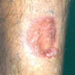

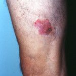

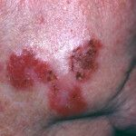

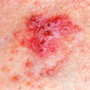


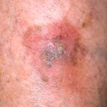

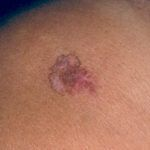

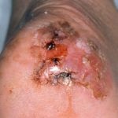

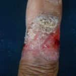

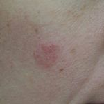


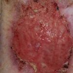


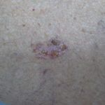

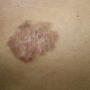

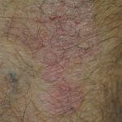

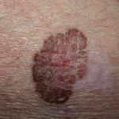

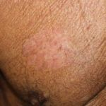

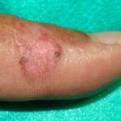

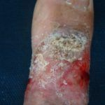

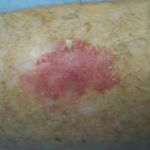

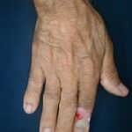


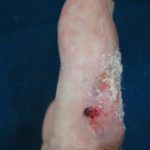

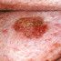

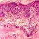

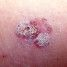
Na Skin Prime
Como podemos ajudar
Entre os recursos citados para Doença de Bowen, estes estão disponíveis na clínica:
Tratamentos
Diagnóstico